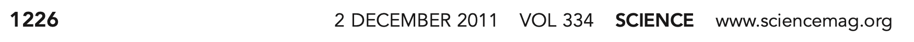
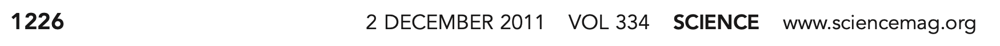

Reproducible Research using
Welcome! 1st SARA Summer School, Sonipat.

A registered charitable education institute founded in April 2023.
To empower underrepresented communities in India through data science education.
Reproducible research
 

Updates with Quarto

Popular open-access software

R programming language

“R is a free software environment for statistical computing and graphics.”
History of R
Initially developed as S language by Bells Labs.
First appeared in August 1993 as R language by:
Ross Ihaka
(New Zealand Statistician)

Robert Gentleman
(Canadian Statistician)

Why R?


Download R from CRAN

Workspace image
Don’t save workspace image.
It helps in “freshly minted R sessions”.
“put more trust in your script than in your memory”.

Plot using R

üî• WE NEED A SUPERHERO üî•


RStudio is an integrated development environment (IDE) for R and Python.
It includes a console, syntax-highlighting editor that supports direct code execution, and tools for plotting, history, debugging, and workspace management.
Download RStudio.
RStudio IDE

RStudio \(\rightarrow\) Tools \(\rightarrow\) Global Options

RStudio \(\rightarrow\) Tools \(\rightarrow\) Global Options

RStudio Project
Open RStudio

RStudio without project

RStudio without project

Create RStudio project

In case anything goes wrong\(...\)

Create RStudio project

Create RStudio project

Create RStudio project

Create RStudio project

Create RStudio project

RStudio project “name”

RStudio project “path”

RStudio project

Write codes in R console

Write codes in R script

Quarto is the next generation of R Markdown


Analyze. Share. Reproduce. You have a story to tell with data — tell it with Quarto.

Get started: Choose IDE

Create a new Quarto document

File \(\rightarrow\) New file \(\rightarrow\) Quarto document

New Quarto document

New Quarto document

New Quarto document

New Quarto document

New Quarto document

New Quarto document

New Quarto document

Save Quarto document

Save Quarto document

Process When You Render Quarto

Source editor & Visual editor

Visual editor

Visual editor

Visual editor

Source editor


Markdown
Add images
If image is saved in your computer,


Add images
If image is taken from the internet,


Code Chunk
Code chunks (or cells or blocks)
Three ways to insert code chunks in the quarto file:
Keyboard shortcuts:
- for
Option+Cmd+i. - for
ctrl+alt+i.
- for
 Insert Chunk button in the editor toolbar.
Insert Chunk button in the editor toolbar.Manually type the chunk delimiters `
{r}` and.
 Insert Chunk button in the editor toolbar.
Insert Chunk button in the editor toolbar.Code chunks (or cells or blocks)
Two ways to run code chunks:

Use the Run Current Chunk or Run All Chunks Above buttons.
Run the current code chunk with
Cmd/Ctrl+Shift+Enter.
Structure of R function

Structure of R function

Structure of R function

Structure of R function

Structure of R function


R Packages
Metacran

Name of the packages

Installed packages

Tools \(\rightarrow\) Package updates

Click install updates

To remove packages


R Objects
RStudio environment window

ü§î How to combine all these objects and form a data set?

Comment
Artwork by Alision Horst

Community Help
Posit community

Stack Overflow

GitHub

Goal
How to visualize data using R package ggplot2.

ggplot2 Layers

Import Data


Map Variables Aesthetics

Add Geometric Shapes


ü߆ YOUR TURN

05:00
“Fill” Color

“Fill” Colors

“Fill” & “Color” Colors

ü߆ YOUR TURN

05:00
Plot A Continuous Variable
ü߆ YOUR TURN

05:00
Two Continuous Variables

Geom Size

Geom Shape


ü߆ YOUR TURN

05:00
Plot A Factor & Factor

Plot A Factor & Continuous

A Factor & Two Cont.

A Factor & Two Cont.

Different Shapes
Each level of the factor/category can be shown using a different shape of different color.

Various Themes

Various Themes

Color Palette

Color Palette
R package ggthemes have function to use color scheme for colorblindness. Know more
ggplot(data = penguins,
mapping = aes(x = bill_length_mm, y = bill_depth_mm)) +
geom_point(aes(color = species, shape = species)) +
labs(
title = "The title of the plot",
subtitle = "The subtitle of the plot",
x = "Bill length (mm)",
y = "Bill depth (mm)"
) +
theme_clean() +
scale_color_colorblind()
Color Palette
ggplot(data = penguins,
mapping = aes(x = bill_length_mm, y = bill_depth_mm)) +
geom_point(aes(color = species, shape = species)) +
labs(
title = "The title of the plot",
subtitle = "The subtitle of the plot",
x = "Bill length (mm)",
y = "Bill depth (mm)"
) +
theme_clean() +
scale_color_brewer(palette = "Dark2")
Color Palette
[1] "BottleRocket1" "BottleRocket2" "Rushmore1"
[4] "Rushmore" "Royal1" "Royal2"
[7] "Zissou1" "Zissou1Continuous" "Darjeeling1"
[10] "Darjeeling2" "Chevalier1" "FantasticFox1"
[13] "Moonrise1" "Moonrise2" "Moonrise3"
[16] "Cavalcanti1" "GrandBudapest1" "GrandBudapest2"
[19] "IsleofDogs1" "IsleofDogs2" "FrenchDispatch"
[22] "AsteroidCity1" "AsteroidCity2" "AsteroidCity3" ggplot(data = penguins,
mapping = aes(x = bill_length_mm, y = bill_depth_mm)) +
geom_point(aes(color = species, shape = species)) +
labs(
title = "The title of the plot",
subtitle = "The subtitle of the plot",
x = "Bill length (mm)",
y = "Bill depth (mm)"
) +
theme_clean() +
scale_color_manual(values = wes_palette("BottleRocket2", n = 3))
Export Plot
Export/save plot as pdf, jpg or png file.
ggplot(data = penguins,
mapping = aes(x = bill_length_mm, y = bill_depth_mm)) +
geom_point(aes(color = species, shape = species)) +
labs(
title = "The title of the plot",
subtitle = "The subtitle of the plot",
x = "Bill length (mm)",
y = "Bill depth (mm)"
) +
theme_clean() +
scale_color_manual(values = wes_palette("BottleRocket2", n = 3))
ggsave("penguins-plot.pdf")
Research approaches:
Qualitative,
Quantitative, and
Mixed methods.

Qualitative approach
“using words”
“for exploring and understanding the meaning individuals or groups ascribe to a social or human problem.”
open-ended questions and responses
flexible report structure

Quantitative approach
use numbers
“for testing objective theories by examining relationship among variables”
closed-ended questions and responses
set structure

Mixed methods approach
- “an inquiry involving collecting both quantitative and qualitative data, integrating the two forms of data, and using distinct designs that may involve philosophical assumptions and theoretical frameworks.”

Literature Review

üò≠ Literature
review process

Deductive research

“The type of research in which a
specific expectation is deduced
from a general premise and is
then tested.”
Select a
research method
Data Science Process

Social media #RStats